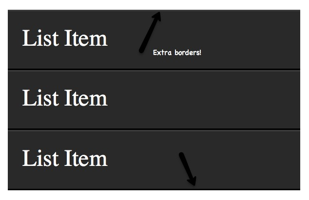

看这一篇就够了,css选择器知识汇总
对大多技术人员来说都比较熟悉CSS选择器，举一例子来说，假设给一个p标签增加一个类（class），可是执行后该class中的有些属性并没有起作用。通过Firebug查看，发现没有起作用的属性被覆盖了，这个时候突然意识到了CSS选择器的优先级问题。严格来讲，选择器的种类可以分为三种：标签名选择器、类选择器和ID选择器。而所谓的后代选择器和群组选择器只不过是对前三种选择器的扩展应用。而在标签内写入style=""的方式，应该是CSS的一种引入方式，而不是选择器，因为根本就没有用到选择器。而一般人们将上面这几种方式结合在一起，所以就有了5种或6种选择器了。
最基本的选择器是元素选择器(比如div),ID选择器(比如#header)还有类选择器(比如.tweet)。
一些的不常见的选择器包括伪类选择器(:hover)，很多复杂的CSS3和正则选择器，比如：first-child，class ^= “grid-”。CSS选择器具有高效的继承性，引用Steve Souders的话， CSS选择器效率从高到低的排序如下：1.id选择器（#myid）
2.类选择器（.myclassname）
3.标签选择器（div,h1,p）
4.相邻选择器（h1+p）
5.子选择器（ul > li）
6.后代选择器（li a）
7.通配符选择器（*）
8.属性选择器（a[rel="external"]）
9.伪类选择器（a:hover, li:nth-child）
纵使ID选择器很快、高效，但是它也仅仅如此。从Steve Souders的CSS Test我们可以看出ID选择器和类选择器在速度上的差异很小很小。
在Windows系统上的Firefox 6上，我测得了一个简单类选择器的（reflow figure）重绘速度为10.9ms，而ID选择器为12.5ms，所以事实上ID比类选择器重绘要慢一点点。
ID选择器和类选择器在速度上的差异基本上没有关系。
在一个标签选择器(a)的测试上显示，它比类或ID选择器的速度慢了很多。在一个嵌套很深的后代选择器的测试上，显示数据为440左右！从这里我们可以看出ID/类选择器 和 元素/后代选择器中间的差异较大，但是相互之间的差异较小。
选择器的优先级是怎么规定的呢？
对于什么情况下使用什么选择器，用不同选择器的原则是：div.test1 .span var 优先级 1+10 +10 +1 span#xxx .songs li 优先级1+100 + 10 + 1#xxx li 优先级 100 + 1
①最常用的选择器是类选择器。
②li、td、dd等经常大量连续出现，并且样式相同或者相类似的标签，我们采用类选择器跟标签名选择器结合的后代选择器 .xx li/td/dd {} 的方式选择。
③极少的情况下会用ID选择器，当然很多前端开发人员喜欢header，footer，banner，conntent设置成ID选择器的，因为相同的样式在一个页面里不可能有第二次。
在这里不得不提使用在标签内引入CSS的方式来写CSS，即：
<div style="color:red">polaris</div>
怎么提升CSS选择器性能？
.content {color: red;}浏览器匹配文档中所有的元素后分别向上逐级匹配 class 为 content 的元素，直到文档的根节点。因此其匹配开销是非常大的，所以应避免使用关键选择器是通配选择器的情况。
2、避免使用标签或 class 选择器限制 id 选择器
BAD
button#backButton {…}
BAD
.menu-left#newMenuIcon {…}
GOOD
#backButton {…}
GOOD
#newMenuIcon {…}3、避免使用标签限制 class 选择器
BAD
treecell.indented {…}
GOOD
.treecell-indented {…}
BEST
.hierarchy-deep {…}4、避免使用多层标签选择器。使用 class 选择器替换，减少css查找
BAD
treeitem[mailfolder="true"] > treerow > treecell {…}
GOOD
.treecell-mailfolder {…}5、避免使用子选择器
BAD
treehead treerow treecell {…}
BETTER, BUT STILL BAD
treehead > treerow > treecell {…}
GOOD
.treecell-header {…}6、使用继承
BAD
#bookmarkMenuItem > .menu-left { list-style-image: url(blah) }
GOOD
#bookmarkMenuItem { list-style-image: url(blah) }简洁、高效的CSS
所谓高效的CSS就是让浏览器在查找style匹配的元素的时候尽量进行少的查找，下面列出一些我们常见的写CSS犯一些低效错误：不要在ID选择器前使用标签名
一般写法：DIV#divBox
更好写法：#divBox
解释： 因为ID选择器是唯一的，加上div反而增加不必要的匹配。
不要再class选择器前使用标签名
一般写法：span.red
更好写法：.red
解释：同第一条，但如果你定义了多个.red，而且在不同的元素下是样式不一样，则不能去掉，比如你css文件中定义如下：
- p.red{color:red;}
- span.red{color:#ff00ff}
如果是这样定义的就不要去掉，去掉后就会混淆，不过建议最好不要这样写
尽量少使用层级关系
一般写法：#divBox p .red{color:red;}
更好写法：.red{..}
使用class代替层级关系
一般写法：#divBox ul li a{display:block;}
更好写法：.block{display:block;}
必须记住的30类CSS选择器
1.*
{
margin: 0;
padding: 0;
}在我们看比较高级的选择器之前，应该认识下这个众所周知的清空选择器。星号呢会将页面上所有每一个元素都选到。许多开发者都用它来清空margin和padding。当然你在练习的时候使用这个没问题，但是我不建议在生产环境中使用它。它会给浏览器凭添许多不必要的东西。*也可以用来选择某元素的所有子元素。
#container * {
border: 1px solid black;
}
它会选中#container下的所有元素。当然，我还是不建议你去使用它，如果可能的话。
兼容性
- IE6+
- Firefox
- Chrome
- Safari
- Opera
2. #X
#container {
width: 960px;
margin: auto;
}
在选择器中使用#可以用id来定位某个元素。大家通常都会这么使用，然后使用的时候大家还是得相当小心的。需要问自己一下：我是不是必须要给这个元素来赋值个id来定位它呢？
id选择器是很严格的并且你没办法去复用它。如果可能的话，首先试试用标签名字，HTML5中的新元素，或者是伪类。
兼容性
- IE6+
- Firefox
- Chrome
- Safari
- Opera
3. .X
.error {
color: red;
}
这是个class选择器。它跟id选择器不同的是，它可以定位多个元素。当你想对多个元素进行样式修饰的时候就可以使用class。当你要对某个特定的元素进行修饰那就是用id来定位它。
兼容性
- IE6+
- Firefox
- Chrome
- Safari
- Opera
4. X Y
li a {
text-decoration: none;
}
下一个常用的就是descendant选择器。如果你想更加具体的去定位元素，你可以使用它。例如，假如，你不需要定位所有的a元素，而只需要定位li标签下的a标签？这时候你就需要使用descendant选择器了。
专家提示：如果你的选择器像X Y Z A B.error这样，那你就错了。时刻都提醒自己，是否真的需要对那么多元素修饰。
兼容性
- IE6+
- Firefox
- Chrome
- Safari
- Opera
5. X
a { color: red; }
ul { margin-left: 0; }
如果你想定位页面上所有的某标签，不是通过id或者是’class’，这简单，直接使用类型选择器。
兼容性
- IE6+
- Firefox
- Chrome
- Safari
- Opera
6. X:visited and X:link
a:link {color:red;}
a:visited {color: purple;}
我们使用:link这个伪类来定位所有还没有被访问过的链接。
另外，我们也使用:visited来定位所有已经被访问过的链接。
兼容性
- IE7+
- Firefox
- Chrome
- Safari
- Opera
7. X+Y
ul + p {
color: red;
}
这个叫相邻选择器。它指挥选中指定元素的直接后继元素。上面那个例子就是选中了所有ul标签后面的第一段，并将它们的颜色都设置为红色。
兼容性
- IE7+
- Firefox
- Chrome
- Safari
- Opera
8. X>Y
div#container > ul {
border: 1px solid black;
}
X Y和X > Y的差别就是后面这个指挥选择它的直接子元素。看下面的例子：
<div id="container">
<ul>
<li> List Item
<ul>
<li> Child </li>
</ul>
</li>
<li> List Item </li>
<li> List Item </li>
<li> List Item </li>
</ul>
</div>
#container > ul只会选中id为’container’的div下的所有直接ul元素。它不会定位到如第一个li下的ul元素。
由于某些原因，使用子节点组合选择器会在性能上有许多的优势。事实上，当在javascript中使用css选择器时候是强烈建议这么做的。
兼容性
- IE7+
- Firefox
- Chrome
- Safari
- Opera
9. X ~ Y
ul ~ p {
color: red;
}
兄弟节点组合选择器跟X+Y很相似，然后它又不是那么的严格。ul + p选择器只会选择紧挨跟着指定元素的那些元素。而这个选择器，会选择跟在目标元素后面的所有匹配的元素。
兼容性
- IE7+
- Firefox
- Chrome
- Safari
- Opera
10. X[title]
a[title] {
color: green;
}
这个叫属性选择器，上面的这个例子中，只会选择有title属性的元素。那些没有此属性的锚点标签将不会被这个代码修饰。那再想想如果你想更加具体的去筛选？那…
兼容性
- IE7+
- Firefox
- Chrome
- Safari
- Opera
11. X[href="foo"]
a[href="http://strongme.cn"] {
color: #1f6053; /* nettuts green */
}
上面这片代码将会把href属性值为http://strongme.cn的锚点标签设置为绿色，而其他标签则不受影响。
注意我们将值用双引号括起来了。那么在使用Javascript的时候也要使用双引号括起来。可以的话，尽量使用标准的CSS3选择器。
这样可以用了，但是还是有点死，如果不是这个链接，而是类似的链接，那么这时就得用正则表达式了。
兼容性
- IE7+
- Firefox
- Chrome
- Safari
- Opera
12. X[href="strongme"]
a[href="strongme"] {
color: #1f6053;
}Tada,正是我们需要的，这样，就指定了strongme这个值必须出现在锚点标签的href属性中，不管是strongme.cn还是strongme.com还是www.strongme.cn都可以被选中。
但是记得这是个很宽泛的表达方式。如果锚点标签指向的不是strongme相关的站点，如果要更加具体的限制的话，那就使用^和$，分别表示字符串的开始和结束。
兼容性
IE7+
Firefox
Chrome
Safari
Opera
13. X[href^="href"]
a[href^="http"] {
background: url(path/to/external/icon.png) no-repeat;
padding-left: 10px;
}大家肯定好奇过，有些站点的锚点标签旁边会有一个外链图标，我也相信大家肯定见过这种情况。这样的设计会很明确的告诉你会跳转到别的网站。
用克拉符号就可以轻易做到。它通常使用在正则表达式中标识开头。如果我们想定位锚点属性href中以http开头的标签，那我们就可以用与上面相似的代码。
注意我们没有搜索http://，那是没必要的，因为它都不包含https://。
那如果我们想找到所有指向一张图片的锚点标签呢？那我们来使用下&字符。
兼容性
IE7+
Firefox
Chrome
Safari
Opera
14. X[href$=".jpg"]
a[href$=".jpg"] {
color: red;
}这次我们又使用了正则表达式$，表示字符串的结尾处。这段代码的意思就是去搜索所有的图片链接，或者其它链接是以.jpg结尾的。但是记住这种写法是不会对gifs和pngs起作用的。
兼容性
IE7+
Firefox
Chrome
Safari
Opera
15. X[data-*="foo"]
a[data-filetype="image"] {
color: red;
}在回到第8条，我们如何把所有的图片类型都选中呢png,jpeg,’jpg’,'gif’？我们可以使用多选择器。看下面：
a[href$=".jpg"],
a[href$=".jpeg"],
a[href$=".png"],
a[href$=".gif"] {
color: red;
}但是这样写着很蛋疼啊，而且效率会很低。另外一个办法就是使用自定义属性。我们可以给每个锚点加个属性data-filetype指定这个链接指向的图片类型。
[html]
Image Link 那有了这个钩子，我们就可以去用标准的办法只去选定文件类型为image的锚点了。
a[data-filetype="image"] {
color: red;
}兼容性
IE7+
Firefox
Chrome
Safari
Opera
16. X[foo~="bar"]
a[data-info~="external"] {
color: red;
}
a[data-info~="image"] {
border: 1px solid black;
}
这个我想会让你的小伙伴惊呼妙极了。很少有人知道这个技巧。这个~符号可以定位那些某属性值是空格分隔多值的标签。
继续使用第15条那个例子，我们可以设置一个data-info属性，它可以用来设置任何我们需要的空格分隔的值。这个例子我们将指示它们为外部连接和图片链接。
Click Me, Fool
给这些元素设置了这个标志之后，我们就可以使用~来定位这些标签了。
/ Target data-info attr that contains the value "external" /
a[data-info~="external"] {
color: red;
}
/ And which contain the value "image" /
a[data-info~="image"] {
border: 1px solid black;
}
## 17. X:checked
input[type=radio]:checked {
border: 1px solid black;
}上面这个伪类写法可以定位那些被选中的单选框和多选框，就是这么简单。
兼容性
IE9+
Firefox
Chrome
Safari
Opera
18. X:after
before和after这俩伪类。好像每天大家都能找到使用它们的创造性方法。它们会在被选中的标签周围生成一些内容。
当使用.clear-fix技巧时许多属性都是第一次被使用到里面的。
.clearfix:after {
content: "";
display: block;
clear: both;
visibility: hidden;
font-size: 0;
height: 0;
}
.clearfix {
display: inline-block;
_height: 1%;
}
上面这段代码会在目标标签后面补上一段空白，然后将它清除。这个方法你一定得放你的聚宝盆里面。特别是当overflow:hidden方法不顶用的时候，这招就特别管用了。
根据CSS3标准规定，可以使用两个冒号::。然后为了兼容性，浏览器也会接受一个双引号的写法。其实在这个情况下，用一个冒号还是比较明智的。
兼容性
IE8+
Firefox
Chrome
Safari
Opera
19. X:hover
div:hover {
background: #e3e3e3;
}不用说，大家肯定知道它。官方的说法是user action pseudo class.听起来有点儿迷糊，其实还好。如果想在用户鼠标飘过的地方涂点儿彩，那这个伪类写法可以办到。
注意旧版本的IE只会对加在锚点a标签上的:hover伪类起作用。
通常大家在鼠标飘过锚点链接时候加下边框的时候用到它。
a:hover {
border-bottom: 1px solid black;
}专家提示：border-bottom:1px solid black;比text-decoration:underline;要好看很多。
兼容性
IE6+(IE6只能在锚点标签上起作用)
Firefox
Chrome
Safari
Opera
20. X:not(selector)
div:not(#container) {
color: blue;
}取反伪类是相当有用的，假设我们要把除id为container之外的所有div标签都选中。那上面那么代码就可以做到。
或者说我想选中所有出段落标签之外的所有标签。
:not(p) {
color: green;
}兼容性
IE9+
Firefox
Chrome
Safari
Opera
21. X::pseudoElement
p::first-line {
font-weight: bold;
font-size:1.2em;
}我们可以使用::来选中某标签的部分内容，如第一段，或者是第一个字没有。但是记得必须使用在块式标签上才起作用。
伪标签是由两个冒号 :: 组成的。
定位第一个字
p::first-letter {
float: left;
font-size: 2em;
font-weight: bold;
font-family: cursive;
padding-right: 2px;
}上面这段代码会找到页面上所有段落，并且指定为每一段的第一个字。
它通常在一些新闻报刊内容的重点突出会使用到。
定位某段的第一行
p::first-line {
font-weight: bold;
font-size: 1.2em;
}跟::first-line相似，会选中段落的第一行 。
为了兼容性，之前旧版浏览器也会兼容单冒号的写法，例如:first-line,:first-letter,:before,:after.但是这个兼容对新介绍的特性不起作用。
兼容性
IE6+
Firefox
Chrome
Safari
Opera
22. X:nth-child(n)
li:nth-child(3) {
color: red;
}还记得我们面对如何取到推跌式标签的第几个元素是无处下手的时光么，有了nth-child那日子就一去不复返了。
请注意nth-child接受一个整形参数，然后它不是从0开始的。如果你想获取第二个元素那么你传的值就是li:nth-child(2).
我们甚至可以获取到由变量名定义的个数个子标签。例如我们可以用li:nth-child(4n)去每隔3个元素获取一次标签。
兼容性
IE9+
Firefox3.5+
Chrome
Safari
23. X:nth-last-child(n)
li:nth-last-child(2) {
color: red;
}假设你在一个ul标签中有N多的元素，而你只想获取最后三个元素，甚至是这样li:nth-child(397)，你可以用nth-last-child伪类去代替它。
这个技巧可以很正确的代替第16个TIP，不同的就是它是从结尾处开始的，倒回去的。
兼容性
IE9+
Firefox3.5+
Chrome
Safari
Opera
24. X:nth-of-type(n)
ul:nth-of-type(3) {
border: 1px solid black;
}曾几何时，我们不想去选择子节点，而是想根据元素的类型来进行选择。
想象一下有5个ul标签。如果你只想对其中的第三个进行修饰，而且你也不想使用id属性，那你就可以使用nth-of-type(n)伪类来实现了，上面的那个代码，只有第三个ul标签会被设置边框。
兼容性
IE9+
Firefox3.5+
Chrome
Safari
25. X:nth-last-of-type(n)
ul:nth-last-of-type(3) {
border: 1px solid black;
}同样，也可以类似的使用nth-last-of-type来倒序的获取标签。
兼容性
IE9+
Firefox3.5+
Chrome
Safari
Opera
26. X:first-child
ul li:first-child {
border-top: none;
}这个结构性的伪类可以选择到第一个子标签，你会经常使用它来取出第一个和最后一个的边框。
假设有个列表，每个标签都有上下边框，那么效果就是第一个和最后一个就会看起来有点奇怪。这时候就可以使用这个伪类来处理这种情况了。
兼容性
IE7+
Firefox
Chrome
Safari
Opera
27. X:last-child
ul > li:last-child {
color: green;
}跟first-child相反，last-child取的是父标签的最后一个标签。
例如
标签
- List Item
- List Item
- List Item
这里没啥内容，就是一个了 List。
ul {
width: 200px;
background: #292929;
color: white;
list-style: none;
padding-left: 0;
}
li {
padding: 10px;
border-bottom: 1px solid black;
border-top: 1px solid #3c3c3c;
}
上面的代码将设置背景色，移除浏览器默认的内边距，为每个li设置边框以凸显一定的深度。

兼容性
IE9+
Firefox
Chrome
Safari
Opera
28. X:only-child
div p:only-child {
color: red;
}说实话，你会发现你几乎都不会用到这个伪类。然而，它是可用的，有会需要它的。
它允许你获取到那些只有一个子标签的父标签。就像上面那段代码，只有一个段落标签的div才被着色。
My paragraph here.
Two paragraphs total.
Two paragraphs total.
上面例子中，第二个div不会被选中。一旦第一个div有了多个子段落，那这个就不再起作用了。
兼容性
IE9+
Firefox
Chrome
Safari
Opera
29. X:only-of-type
li:only-of-type {
font-weight: bold;
}结构性伪类可以用的很聪明。它会定位某标签只有一个子标签的目标。设想你想获取到只有一个子标签的ul标签？
使用ul li会选中所有li标签。这时候就要使用only-of-type了。
ul > li:only-of-type {
font-weight: bold;
}兼容性
IE9+
Firefox 3.5+
Chrome
Safari
Opera
30. X:first-of-type first-of-type
伪类可以选择指定标签的第一个兄弟标签。
测试
My paragraph here.
- List Item 1
- List Item 2
- List Item 3
- List Item 4
来你把List Item 2取出来，如果你已经取出来或者是放弃了，来继续。
解决办法1
办法很多，我们看一些比较方便的。首先是first-of-type。
ul:first-of-type > li:nth-child(2) {
font-weight: bold;
}找到第一个ul标签，然后找到直接子标签li，然后找到第二个子节点。
解决办法2
另一个解决办法就是邻近选择器。
p + ul li:last-child {
font-weight: bold;
}这种情况下，找到p下的直接ul标签，然后找到它的最后一个直接子标签。
解决办法3
我们可以随便玩耍这些选择器。来看看：
ul:first-of-type li:nth-last-child(1) {
font-weight: bold;
}先获取到页面上第一个ul标签，然后找到最后一个子标签。
兼容性
IE9+
Firefox 3.5+
Chrome
Safari
Opera
结论
如果你想向旧版本浏览器妥协，比如IE6，那你用这些新的选择器的时候还是得小心点。但别让IE6阻止你去学这些新的技能。那你就对自己太残忍了。记得多查查兼容性列表，或者使用Dean Edward's excellent IE9.js script 来让你的浏览器具有这些特性。
第二个，使用向jQuery的时候，尽量使用原生的CSS3选择器。可能 活让你的代码跑的很快。这样选择器引擎就可以使用浏览器原生解析器，而不是选择器自己的。